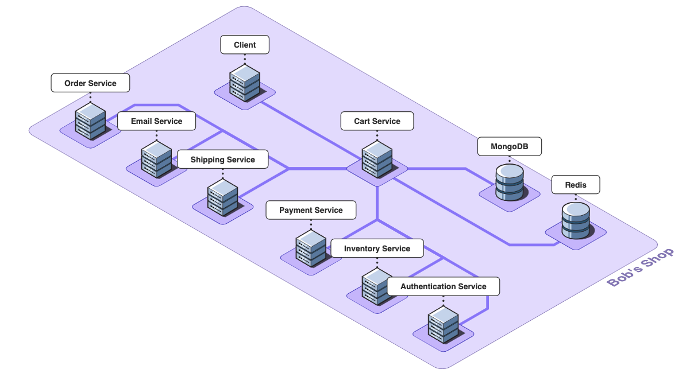
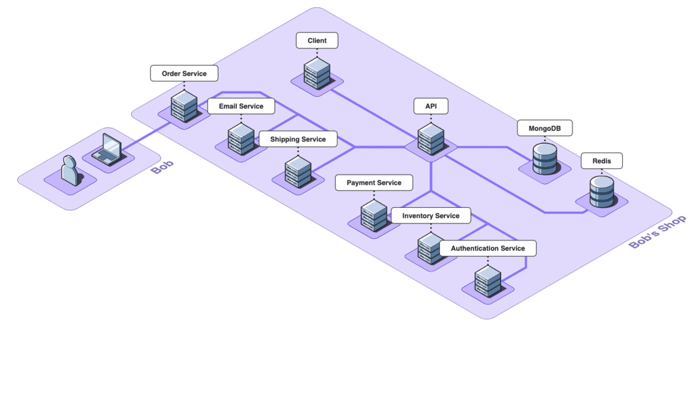
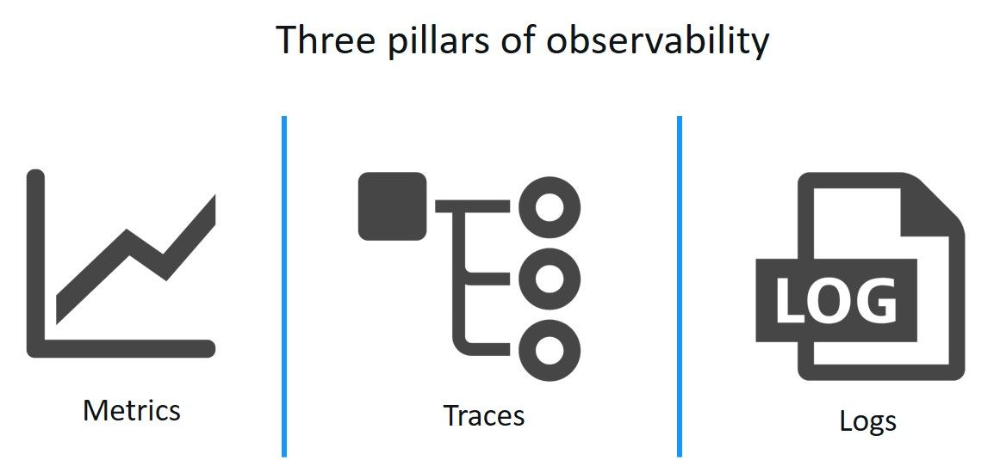
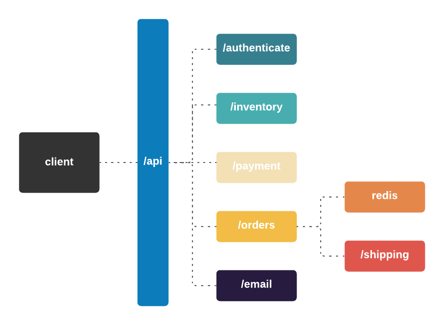
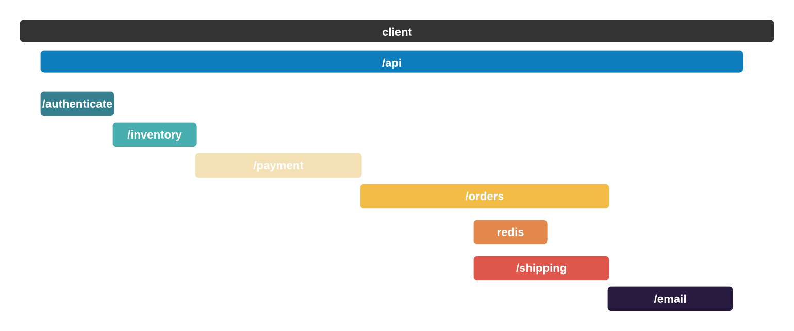
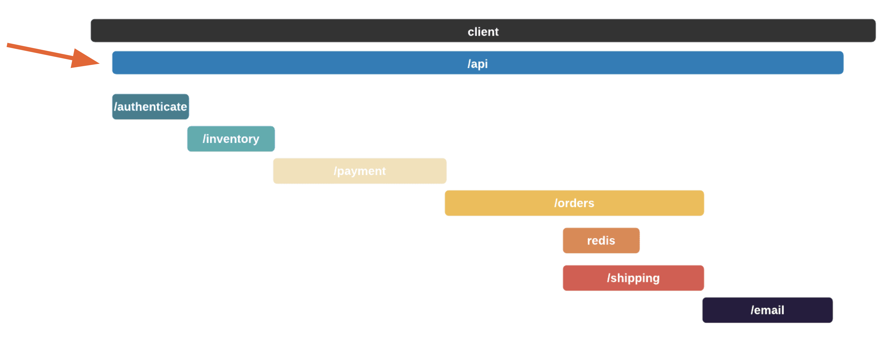
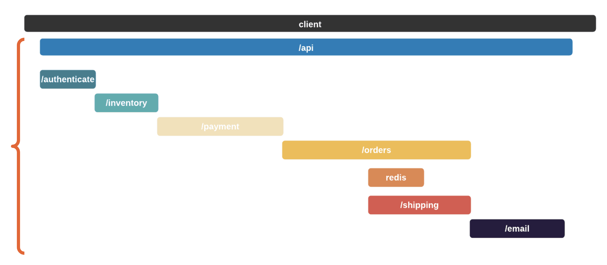

Case Study
1. Retrospect 101
Some words about distributed systems being difficult to manage.
What is retrospect?
2. Use Case
2.1 Bob's Shop: An Example User Story
Here's what Robert's small 1-2 person team looks like.
It works so far:

2.2 There's a Problem
What happens when a service goes down? Bob has to find out what's going on, and sometimes the only clues he has are provided by the user. Unfortunately, Bob can’t depend on users giving him an accurate and comprehensive description of all the activity in the browser - all the actions they took, which browser they were using, etc.
As a result, when a user complains, Bob is often forced to ping every service in his architecture to see if it's still up. If that does not work, then he SSHs into the most likely culprit and checks the logs at the approximate time of the problem. From there, he is rinsing and repeating until the bug is found… or not.

So, now that he has checked all the logs in each service, he might try reproducing the error himself. Which brings him back to the original problem of user-provided information. It’s incomplete. He might try buying the same product that the customer did in hopes of reproducing the problem, but if it was caused by some unexpected behavior by the customer, good luck.
And here’s maybe the worst part. It might not even be a problem with his code. Bob could spend hours looking through logs, poring over code, and talking to customers, but if the actual source of the error was that the machine hosting his shipping code randomly went down… good luck. His customers won’t know and his code looks fine. Not easy to spot.
2.3 About Distributed Systems
"Working with distributed systems is fundamentally different from writing software on a single computer—and the main difference is that there are lots of new and exciting ways for things to go wrong." - Martin Kleppmann
Why is this problem happening to Bob? Why is it so hard to debug in a distributed system?
Distributed systems have a far higher number of interconnected parts, so the number and types of failure that can occur is higher too. Additionally, distributed systems are constantly updated, and every change can create a new type of failure. Source
When all your code lives inside a single machine, you are relatively insulated from the physical world. You can tell at a glance if something has broken. Once your application lives on external computing, you become dependent on networks and data centers well beyond your reach. Machines can become overloaded, data centers can lose power, and you cannot console.log in the user’s browser. In a distributed system, you are subject to messy reality.
How Retrospect Helps
Retrospect is an observability tool for Node applications that allows you to record back-end activity in an easily searchable manner, replacing the process of pinging servers and searching logs.
It also records front-end activity, giving the user an exact reproduction of the customer UI.
Finally, Retrospect ties the front-end recordings to the back-end recordings in a single UI.
2.4 Observability

We said that Retrospect is an observability tool, but what is observability?
Essentially, it’s a set of tools and techniques for understanding what is happening inside of a system by gathering data as it runs.
You’re probably familiar with two of the three pillars: metrics and logs.
Metrics are numeric values over time - for example requests per second, average response time, status code frequency - these can indicate if your system has a problem by illustrating irregular patterns
Logs are records of events that happened at a particular time including contextual information - these can tell you what the problem was, once you’ve found the right logs.
From Splunk:
-
Metrics: A metric is a numeric value measured over an interval of time and includes specific attributes such as timestamp, name, KPIs and value.
-
Traces: A trace represents the end-to-end journey of a request through a distributed system. As a request moves through the host system, every operation performed on it — called a “span” — is encoded with important data relating to the microservice performing that operation. By viewing traces, each of which includes one or more spans, you can track its course through a distributed system and identify the cause of a bottleneck or breakdown.
-
Logs: A log is a text record of an event that happened at a particular time and includes a timestamp that tells when it occurred and a payload that provides context.
Another explanation below:
Metrics - Do I have a problem?
-
Set of numbers that give info about a process or activity, usually measured over time (time-series db)
Logs - What is causing the problem?
-
Immutable record of discrete events that happened over time: timestamp with payload of plaintext, structured JSON, or binary (MySQL binlogs, systemd journal logs)
-
Most commonly plaintext - Can be problematic because the quality of the logs depend on the person who configured the logs
-
The more logs you get, the slower things are
-
Modern applications (distributed systems architecture) are often too complex to even know what log to look at (too many interconnected components). You need the correlation with tracing's spans to know where to go in your distributed system.
Traces - Where is the problem?
-
A view in time of a single trip through the system (triggered by the frontend actions of a user)
Involves hops through multiple services in modern-day applications (distributed systems architecture vs monolith)
2.5 Why Tracing?
So why did we focus on tracing? Because you need tracing to know where to look, especially in a distributed system. Logs are fantastic when you already know where the problem is, but finding the problem is more than half the battle. Modern applications with distributed architectures are often too complex to even know what log to look at.
A helpful analogy here might be the game Telephone. The problem with both back-end debugging and Telephone is that you don't know what happened between the initial request/phrase and the response/final phrase. The distributed system is a black box.
And to take the analogy further, your users are essentially playing telephone with your various microservices, and when a bug occurs, it means their word or phrase got distorted somewhere along the way. In the real world, you could ask the user what they said initially, and what was said at the end. Unfortunately, with web applications, the user can’t tell you *exactly* what they said, or *exactly* what they received, and your microservices are very forgetful.
Our solution essentially gives the user a piece of paper with instructions to write down their name and phrase. When the game starts, that paper gets passed to the next person/microservice, and so-on-and-so-forth. As a result, if the transmission fails, you can get that piece of paper, look at the names and phrases, and identify where the transmission went wrong.
And if you recall Bob’s problem from the beginning of the presentation, the process of talking to the customer, pinging each service, and then SSHing into likely machines was just about finding where the bug lived. That was all a prerequisite to looking through the correct logs. And if the bug was caused by unexpected browser behavior or a machine outage, logs may not even exist.
Consider the Service Diagram:

To put this in more concrete terms, consider the request flow of a system that you might encounter in the real world, an e-commerce app.
When a user places an order, multiple actions begin to take place –– information is passed between services in order to authenticate the user, verify inventory, validate payment information, and dispatch an order for shipping.
It would be difficult to understand the relationship between services purely from looking at the codebase.
A service trace makes it clear how services relate to one another in terms of time and necessity - how long a service takes and which services need to be called to complete the transaction

In this case, the redis and shipping services were called by “orders” service
Order’s service can’t finish until it's childrens finish execution.
A service trace is like a service diagram over time for a specific request
Tracing Terminology
Span
"I want to know where a request went, what data it held, and how long it took"
A span is a single operation within a trace

A span is a single operation within a trace, - i.e. a record of where a request went, and how long it took.
Root Span
"I want to know the first request to hit my architecture"
A Root Span is a span that encompasses an entire set of child spans.

In other words, a Root Span measures the time it took from a user clicking a button to the request flow being completed or failing
Trace
"I want to see a complete execution path of a single request"
A Trace is a view into a single request as it moves through a distributed system.

It is the list of all spans descended from a particular Root Span.
Other possible blockquotes
“I want to see a complete execution path of a single request” and identify which part of the code is causing issues like errors, latency concerns or resource availability.
"I want to see the entire progression of a single request"
2.5 Reproducing Bugs?
Backend tracing without frontend session recording can tell you where a bug occurred but not what a user did to cause the error to occur.
In addition, if the trace does not tell you where the bug occurred but you have a record of the frontend events tied to a trace, you can better reproduce the bug.
3. How is Realtime Implemented
There are many ways to implement realtime in an application. In this
section, we will explore a common way to achieve realtime
functionality for an app with many publishers and many subscribers.
3.1 Enterprise
At the bedrock of web communication we have traditional HTTP request
response cycles, and along with it the idea of pulling data.
When you pull data, you have data that lives in a database
somewhere. This data isn’t retrieved until a client explicitly makes
a request for the data, at which point the server responds.
As we mentioned before, realtime applications automatically update
users, without the user requesting the update. So, realtime apps
tend not to use a data pull pattern.
3.2 DIY
4. How Retrospect is Different
At first glance, implementing realtime functionality for an
application is fairly simple. A library (like
SocketIO) can be
installed to manage Websocket connections and realtime messages.
This works well for a small application, with a small number of
publishers and subscribers. But eventually, coupling application
code with realtime management code (all on the same server) becomes
problematic.
As a realtime application becomes popular, the app server will need
to manage an increasing volume of realtime messages. Eventually, the
message load will become too great and (potentially) cause the app
server to crash.

When realtime applications become more popular, the realtime
management component may need to scale at a different rate than the
rest of the application. A separate realtime service can scale
independently from the applications themselves, eliminating the need
to scale up an entire monolithic application.
To summarise, having dedicated infrastructure for realtime offers:
-
Flexibility (by decoupling the realtime needs
from that of the application, you can scale each part up and down
as needed)
-
Less Complexity (separating out the services
means that you have a better sense of what each part is doing;
developers can focus on their applications instead of
infrastructure)
-
Specialization Benefits (each part is able to do
what it does best, without interference from anything else, and
you can optimise for each particular service)
4.1 Retrospect's Architecture

Companies like
PubNub,
Ably and
Pusher, three of
the major providers of realtime infrastructure-as-a-service, cater
to this need for a managed realtime infrastructure. They
advocate
decoupling realtime infrastructure from your application code “so
that product development teams can focus on innovation instead of
infrastructure.”
“so that product development teams can focus on innovation instead
of infrastructure.” - PubNub
4.1 Bob's Architecture with Retrospect
5. Design Decisions
There’s one last important component of realtime that has not been
mentioned. Realtime messages often require in-transit message
processing. When a message is published, it might need to undergo
some type of analysis or transformation before being received by
subscribed clients.
5.1 Decisions
The general pattern of performing some kind of computation on
realtime messages is widespread.
Here are some examples of common realtime middleware uses:
- Filtering profanity out of chat messages
-
Enriching latitude/longitude coordinates with the demographic
information of that area
- Translating a message in a chat app to a different language
- Performing sentiment analysis on text with machine learning
- Routing payment information to third parties such as Stripe
- Responding to messages with chat bots
- Sending alerts, given a particular trigger / condition

Some real-world examples of this middleware being used for specific
services include:
-
A large beverage company
that made a chat app for a big sporting event. They wanted to
filter any mention of their competitor out of the chat. So they
sent every message down to their servers which they had to spin up
and scale, strip out the name of their competitor, replace it with
their name, and republish the message back out.
-
Guild, a professional messaging/chat app, uses realtime middleware to
handle event-based triggers for their users
-
Onedio, an HQ-trivia app for 1 million players, uses realtime
middleware to route messages to AWS’ SQS with extremely low
latency, something they likely wouldn’t have been able to support
without it.
This need for realtime middleware was recognized by both of the
major realtime infrastructure-as-a-service providers, PubNub and
Ably. Both companies observed that their customers often needed to
perform a small bit of processing on their realtime messages.
“A common requirement in realtime messaging applications is to be
able to insert some business logic into a message processing
pipeline.” -Ably
5.2 Sessions & Chapters
PubNub and Ably recognized the need for realtime middleware when
they noticed
an interesting anti-pattern
emerge with how their customers were using their services.
Recall that PubNub and Ably’s services allow customers to decouple
their application infrastructure from their realtime infrastructure
as described above. However, they observed the users of their
services were sending every single message down to their own app
servers to perform some kind of processing or compute on those
messages. This reintroduced a lot of the same problems that existed
when things were tightly coupled. Now their customers found they had
to pay closer attention to the scaling needs of their service as it
became overburdened with this increased load.
"You see everyone publishing down to their servers doing a small
little bit of processing and then publishing the message right back
out... It doesn't make sense to be funneling all of your data back
down to a small number of servers, scale those out as needed,
process and then republish back out... so, this [PubNub Functions]
is absolutely required." (PubNub CEO, Todd Greene)
- In the client-side code
- In the server-side code
- On a dedicated server for realtime middleware
- In Serverless Functions
6. Implementation Challenges
Developers building realtime applications can choose between three
main options: a third-party service, an open-source solution, or
do-it-yourself. The right choice depends on the specific use case.

If easy setup is most important, it’s probably best to go with a
third-party solution. There are good open-source solutions, but the
extent to which they are easy-to-use depends on each use case.
If complete control over data and infrastructure is important,
third-party solutions won't work. In this case, the only options are
open-source solutions or custom, self-built solutions.
7. Installation & Demo
There are four main parts to Retrospect:
- Retrospect Server
- Retrospect Functions
- Retrospect CLI
- Retrospect Client

The Retrospect Server manages realtime messages for applications with many
publishers and subscribers. It facilitates the processing of
realtime messages by invoking Retrospect Functions.
Retrospect Functions provide realtime middleware for in-transit message
processing. These functions are easy to create, update, and deploy
with the Retrospect CLI tool. For complex workflows, developers can chain
multiple Retrospect Functions together.
7.1 Installation
The Retrospect Server infrastructure can easily be deployed to AWS by
running the ekko init command using the
Retrospect CLI tool.

The Retrospect CLI prompts for AWS credentials and uses those, along with
AWS’ Cloud Development Kit (CDK), to deploy the Retrospect infrastructure
to AWS.
7.2 Demo

This is the infrastructure deployed by ekko init.
The Retrospect Server is a Node application deployed via container to AWS’
Elastic Container Service (ECS). The Application Load Balancer
distributes incoming WebSocket connections to the Retrospect Server. We’ll
go into more detail on the importance of the S3 bucket and
ElastiCache instance in section 8.
8. Retrospect Testing
We faced several engineering challenges when building Retrospect: how to
authenticate clients connecting to our server, how to associate
individual Retrospect Functions with specific realtime channels, and how
to scale the infrastructure.
9. Future Work
We wanted Retrospect to be able to manage thousands of WebSocket
connections to be viable as a realtime message processing framework.
In addition, we wanted it to handle and route hundreds of thousands
of messages in a short amount of time, all while invoking Lambda
functions for in-transit message processing. To test all of this, we
used the
Artillery.io load testing library